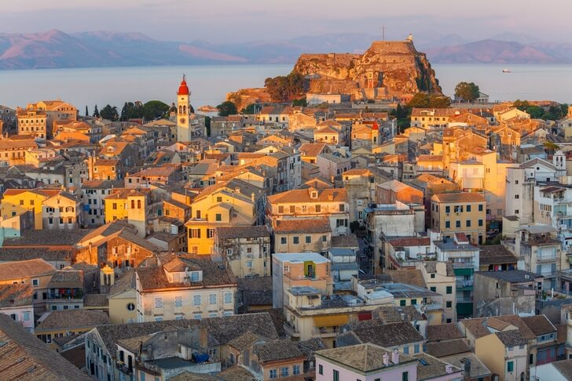
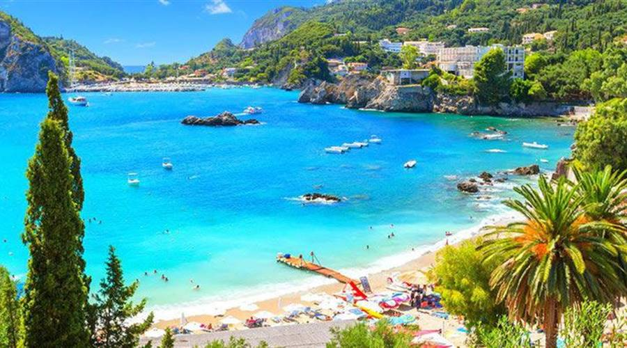
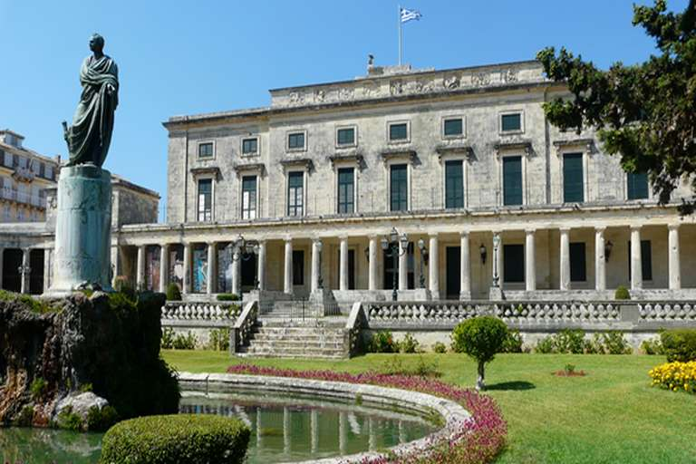

<!DOCTYPE html>
<html>
    <head>
        <title>Krf</title>
        <link rel="stylesheet"href="krf.css">
    </head>
</html>
<body>
      <ul>
    <li><a href="Početna stranica.html">Početna stranica</a></li>
    <li><a href="O Grčkoj.html">O Grčkoj</a></li>
    <li><a href="Destinacije.html">Destinacije</a></li>
    <li><a href="Kultura.html">Kultura</a></li>
</ul>
 <h1 class="Krf"><center>Krf</center></h1>
 <br><br><br><br><br><br>
 <p>Krf je zeleni biser Jonskog mora i jedan od najpoznatijih grčkih otoka. Poznat po bogatoj povijesti, slikovitim gradovima i netaknutoj prirodi, Krf privlači turiste iz cijelog svijeta.</p>
 <h2>Priroda i plaže</h2>
 <p>Otok je prepun bujnih maslinika, citrusnih vrtova i brežuljaka, a njegova obala krije pješčane i šljunčane plaže pogodna za obitelji i zaljubljenike u vodene sportove. Kristalno čisto more savršeno je za kupanje i ronjenje.</p>
 <h2>Povijest i kultura</h2>
 <p>Krf se ponosi bogatom poviješću: od antičkih gradova, preko venezijanskih utvrda, do britanskog i francuskog utjecaja. Otok je bio važno središte trgovine i kulture, a njegovi muzeji i povijesne građevine svjedoče o raznolikoj prošlosti.</p>
 <h2>Tradicija i gastronomija</h2>
 <p>Lokalni običaji i gastronomija ključni su dio života na Krfu. Posjetitelji mogu uživati u tradicionalnim jelima, poput pastitsada i sofrito, te kušati lokalna vina i maslinovo ulje. Festivali i glazba čuvaju autentični duh otoka.</p>
 <h2>Turizam</h2>
 <p>Grad Krf, glavni grad otoka, poznat je po šarmantnim ulicama, elegantnim palačama i živahnim trgovima. Otok nudi razne aktivnosti – od planinarenja, biciklizma i izleta brodom, do opuštanja na prekrasnim plažama.<br>
Krf je idealno mjesto za one koji traže kombinaciju prirodne ljepote, kulturne baštine i opuštajućeg odmora u Grčkoj.</p>
<div class="galerija">
    <div class="stavka">
        <h3>Stari grad Krf</h2>
        
        <p> UNESCO baština s labirintom uskih ulica (kantounia) i mletačkom arhitekturom.</p>
    </div>

    <div class="stavka">
        <h3>Paleokastritsa</h3>
        
       <p>Prekrasna uvala s kristalno čistim morem i samostanom na brdu.</p>
    </div>

    <div class="stavka">
        <h3>Arheološki muzej Krf</h3>
        
        <p>Sadrži nalaze s antičke Korkyre.</p>
    </div>
</div>

<style>
    .galerija {
        display: flex;
        gap: 50px; 
    }

    .stavka {
        text-align: center;
    }

    .stavka img {
        width: 350px;    
        height: 250px;
        display: block;
    }

    .stavka a {
        display: block;
        margin-top: 8px;
        text-decoration: none;
        font-size: 20px;
        color: #000;
    }
</style>
<br><br><br><br><br><br><br><br>
</body>
<footer class="footer">
  <p> Hana Šerbeđija<br> 2.c</p>
</footer>